Plot a time series of vertical profiles of class vpts.
Usage
# S3 method for class 'vpts'
plot(
x,
xlab = "time",
ylab = "height [m]",
quantity = "dens",
log = NA,
barbs = TRUE,
barbs_height = 10,
barbs_time = 20,
barbs_dens_min = 5,
zlim,
legend_ticks,
legend.ticks,
main,
barbs.h = 10,
barbs.t = 20,
barbs.dens = 5,
na_color = "#C8C8C8",
nan_color = "white",
n_color = 1000,
palette = NA,
...
)Arguments
- x
A vp class object inheriting from class
vpts.- xlab
A title for the x-axis.
- ylab
A title for the y-axis.
- quantity
Character string with the quantity to plot, one of '
dens','eta','dbz','DBZH' for density, reflectivity, reflectivity factor and total reflectivity factor, respectively.- log
Logical, whether to display
quantitydata on a logarithmic scale.- barbs
Logical, whether to overlay speed barbs.
- barbs_height
Integer, number of barbs to plot in altitudinal dimension.
- barbs_time
Integer, number of barbs to plot in temporal dimension.
- barbs_dens_min
Numeric, lower threshold in aerial density of individuals for plotting speed barbs in individuals/km^3.
- zlim
Optional numerical atomic vector of length 2, specifying the range of
quantityvalues to plot.- legend_ticks
Numeric atomic vector specifying the ticks on the color bar.
- legend.ticks
Deprecated argument, use legend_ticks instead.
- main
A title for the plot.
- barbs.h
Deprecated argument, use barbs_height instead.
- barbs.t
Deprecated argument, use barbs_time instead.
- barbs.dens
Deprecated argument, use barbs_dens_min instead.
- na_color
Color to use for NA values, see class
vpts()conventions.- nan_color
Color to use for NaN values, see class
vpts()conventions.- n_color
The number of colors (>=1) to be in the palette.
- palette
(Optional) character vector of hexadecimal color values defining the plot color scale, e.g. output from viridis
- ...
Additional arguments to be passed to the low level image plotting function.
Details
Aerial abundances can be visualized in four related quantities, as specified
by argument quantity:
dens: the aerial density of individuals. This quantity is dependent on the assumed radar cross section (RCS) in thex$attributes$how$rcs_birdattributeeta: reflectivity. This quantity is independent of the value of thercs_birdattributedbz: reflectivity factor. This quantity is independent of the value of thercs_birdattribute, and corresponds to the dBZ scale commonly used in weather radar meteorology. Bioscatter by birds tends to occur at much higher reflectivity factors at S-band than at C-bandDBZH: total reflectivity factor. This quantity equals the reflectivity factor of all scatterers (biological and meteorological scattering combined)
Aerial velocities can be visualized in three related quantities, as specified
by argument quantity:
ff: ground speed. The aerial velocity relative to the ground surface in m/s.u: eastward ground speed component in m/s.v: northward ground speed component in m/s.
barbs
In the speed barbs, each half flag represents 2.5 m/s, each full flag 5 m/s, each pennant (triangle) 25 m/s
Examples
# locate example file:
ts <- example_vpts
# plot density of individuals for the first 500 time steps, in the altitude
# layer 0-3000 m.
plot(ts[1:500], ylim = c(0, 3000))
#> Warning: Irregular time-series: missing profiles will not be visible. Use 'regularize_vpts' to make time series regular.
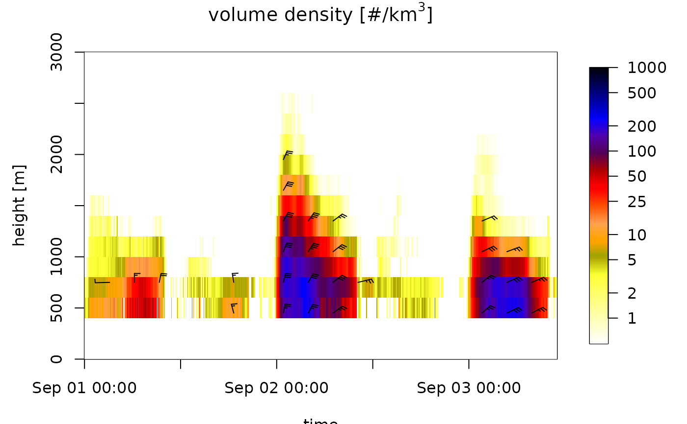
# plot total reflectivity factor (rain, birds, insects together):
plot(ts[1:500], ylim = c(0, 3000), quantity = "DBZH")
#> Warning: Irregular time-series: missing profiles will not be visible. Use 'regularize_vpts' to make time series regular.
 # regularize the time grid, which includes empty (NA) profiles at
# time steps without data:
ts_regular <- regularize_vpts(ts)
#> projecting on 300 seconds interval grid...
plot(ts_regular)
# regularize the time grid, which includes empty (NA) profiles at
# time steps without data:
ts_regular <- regularize_vpts(ts)
#> projecting on 300 seconds interval grid...
plot(ts_regular)
 # change the color of missing NA data to red
plot(ts_regular, na_color="red")
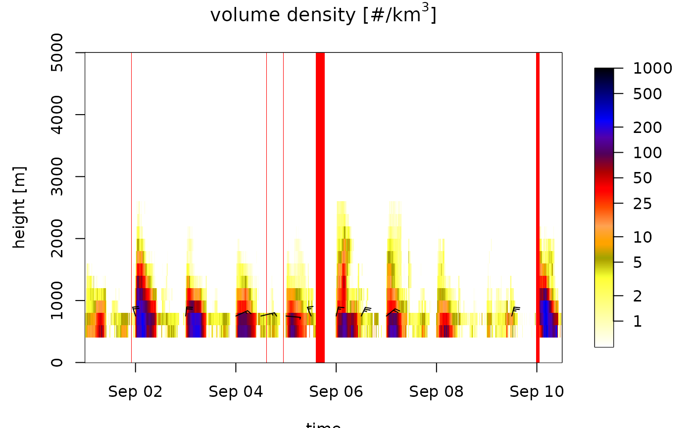
# change the color palette:
plot(ts_regular[1:1000], ylim = c(0, 3000), palette=viridis::viridis(1000))
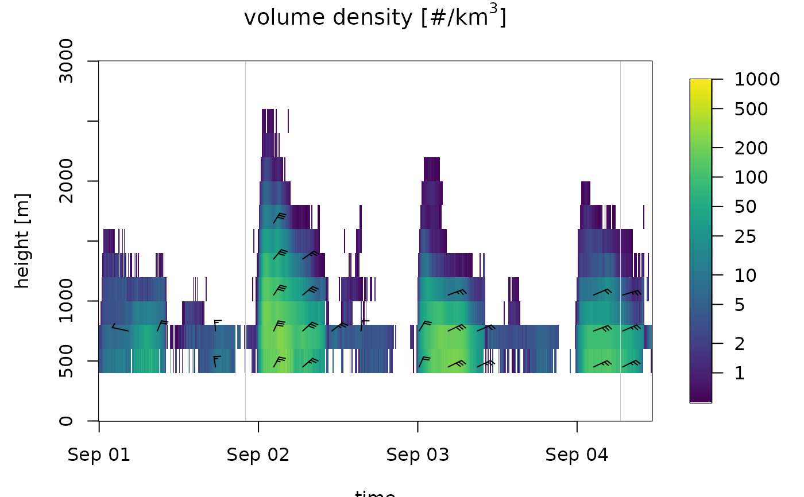
# change and inverse the color palette:
plot(ts_regular[1:1000], ylim = c(0, 3000), palette=rev(viridis::viridis(1000, option="A")))
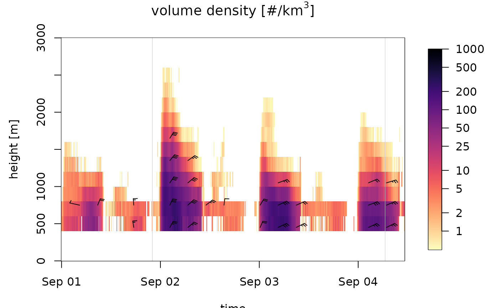
# plot the speed profile:
plot(ts_regular[1:1000], quantity="ff")
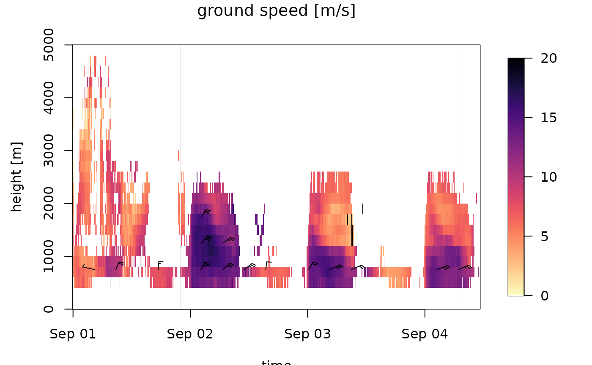
# plot the northward speed component:
plot(ts_regular[1:1000], quantity="v")
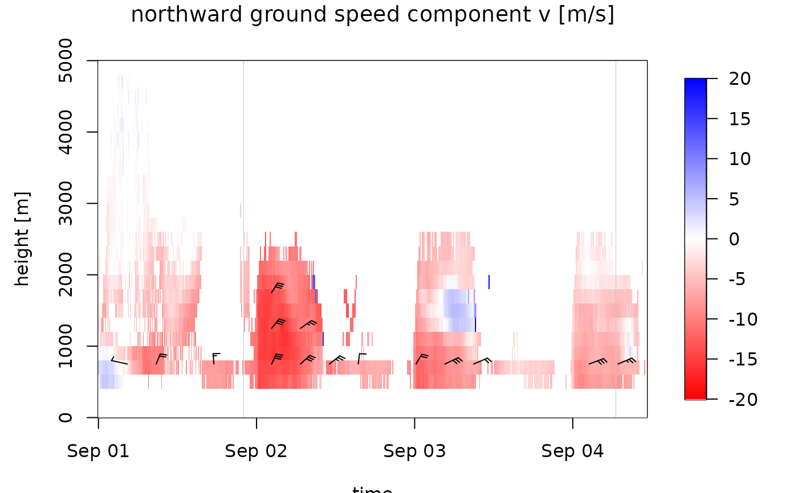
# plot speed profile with more legend ticks,
plot(ts_regular[1:1000], quantity="ff", legend_ticks=seq(0,20,2), zlim=c(0,20))
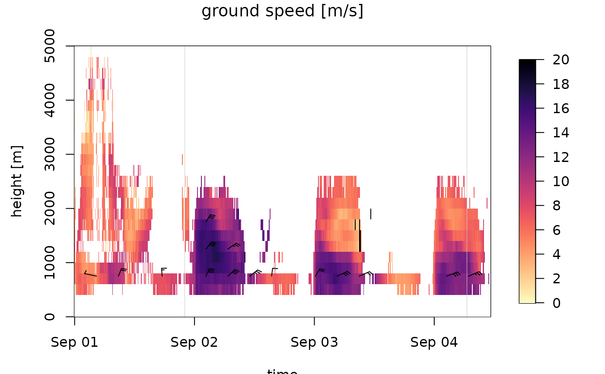
# change the color of missing NA data to red
plot(ts_regular, na_color="red")
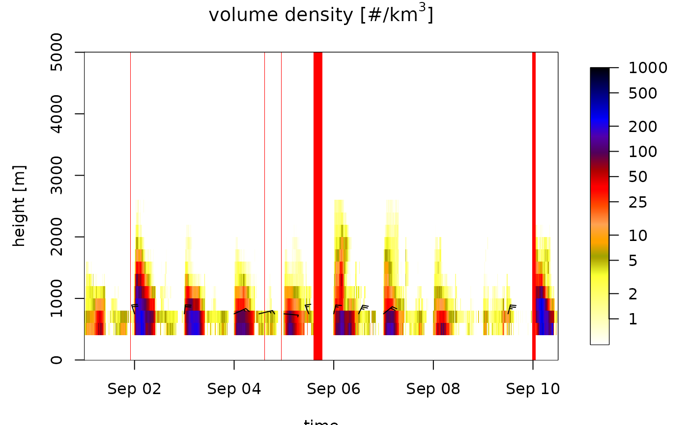
# change the color palette:
plot(ts_regular[1:1000], ylim = c(0, 3000), palette=viridis::viridis(1000))
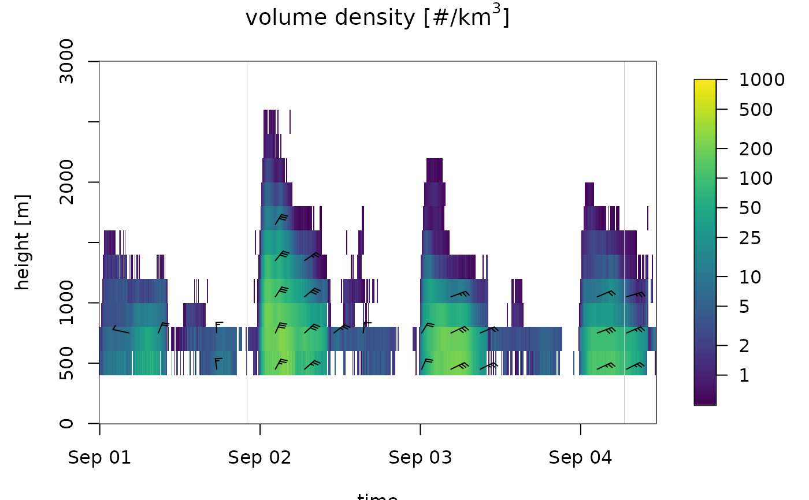
# change and inverse the color palette:
plot(ts_regular[1:1000], ylim = c(0, 3000), palette=rev(viridis::viridis(1000, option="A")))
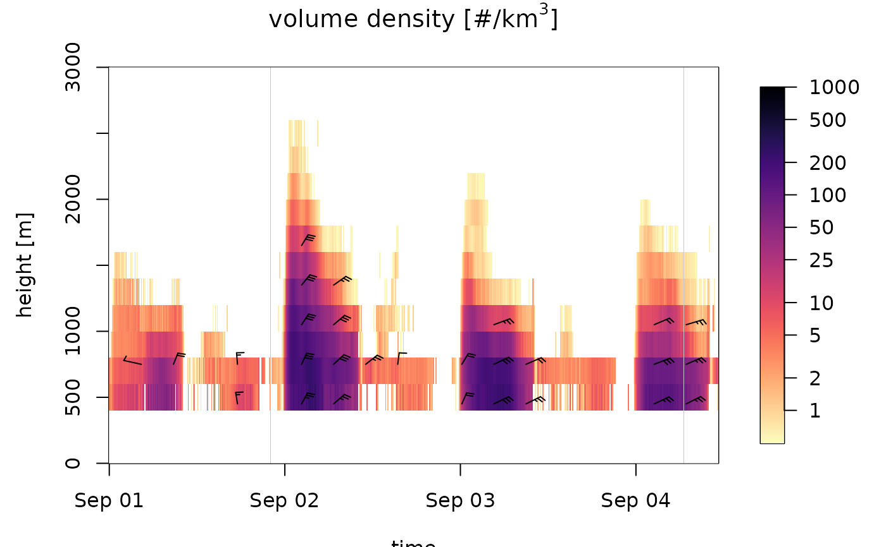
# plot the speed profile:
plot(ts_regular[1:1000], quantity="ff")
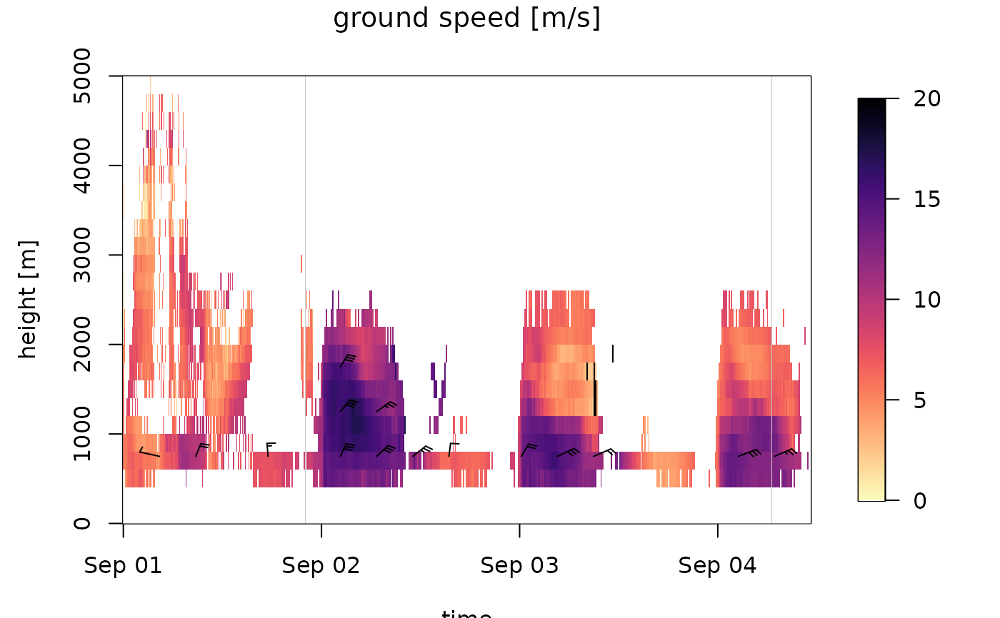
# plot the northward speed component:
plot(ts_regular[1:1000], quantity="v")
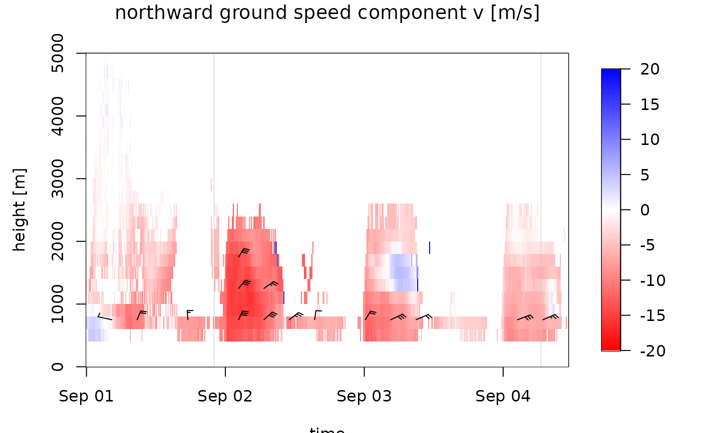
# plot speed profile with more legend ticks,
plot(ts_regular[1:1000], quantity="ff", legend_ticks=seq(0,20,2), zlim=c(0,20))
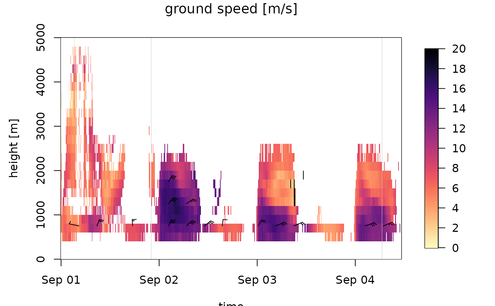